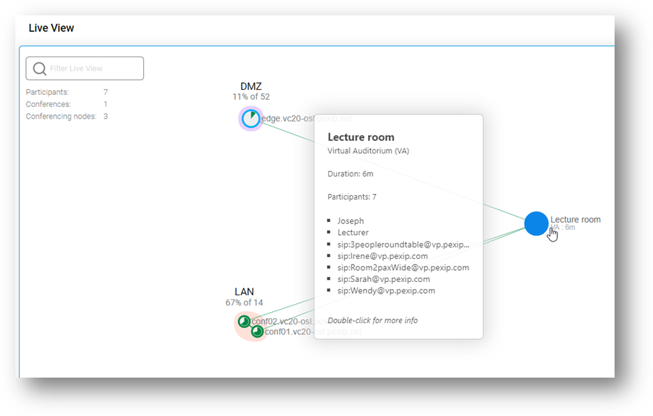
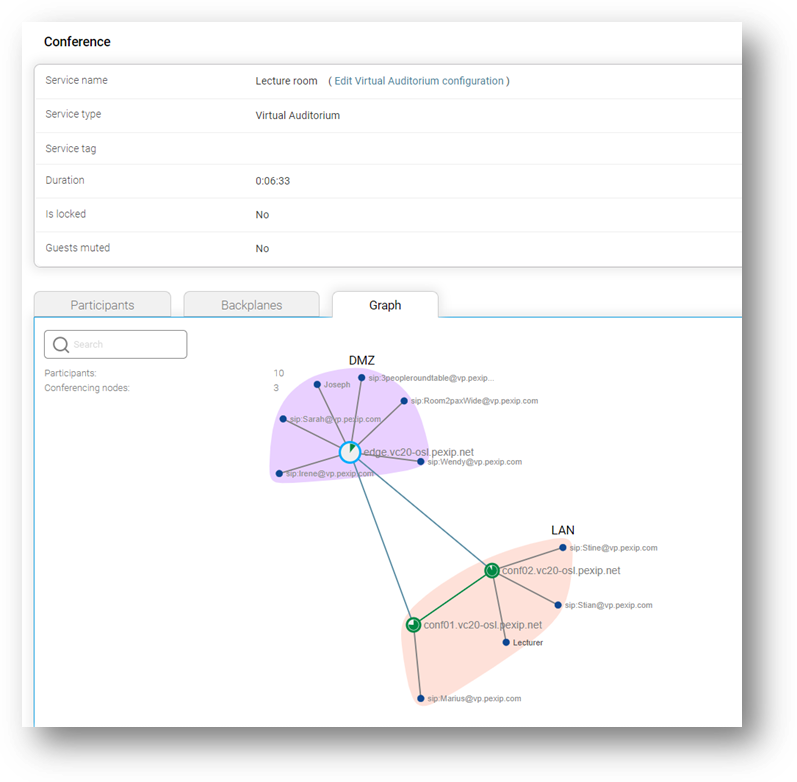
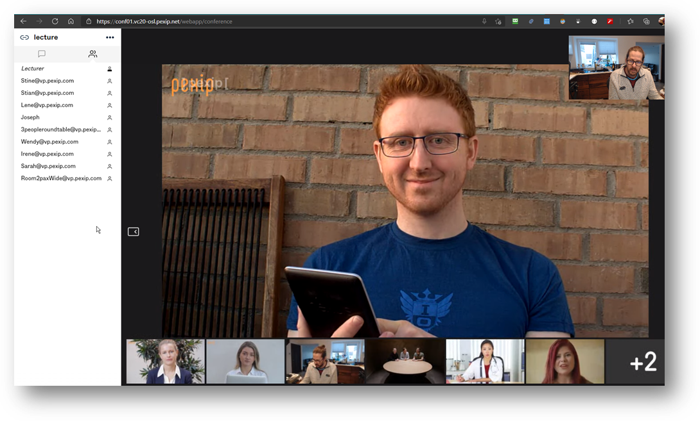
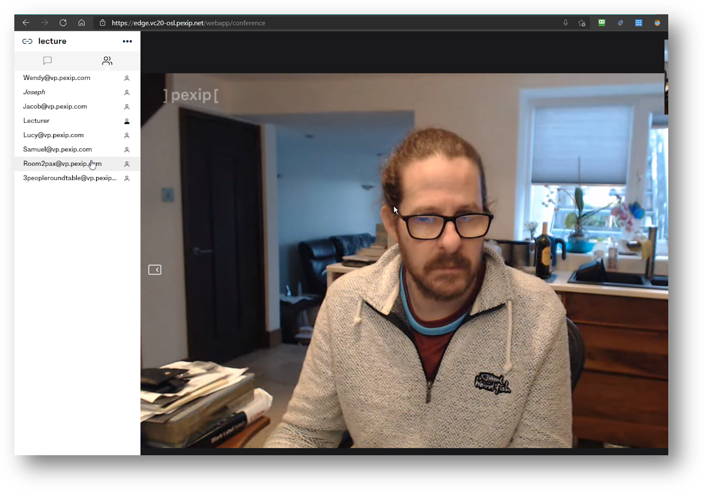

Suggested completion time: 30 minutes
No specific lab sheet section.
No steps outlined. Please refer to https://docs.pexip.com/admin/creating_editing_lectures.htm to complete the task. The point of this exercise is that you will refer to our documentation.
Create your Virtual Auditorium!
Most of the time you when you create a Virtual Auditorium, you will do so to allow both hosts and guests, so you will want to ensure that you have set a Host PIN and “Allow guests” is set to “Yes”.
Perhaps a lecture is a little lonely with just two users in a group, so invite some friends in the form of PexEPs (Pexip EndPoints). PexEPs allow you to generate video calls to help you test an Infinity system.
NOTE: When you get back to your day job in your organisation (i.e., outside of these labs), you can use our PexEPs to test your Infinity deployments (again, not for these labs). If you wanted to set this up, you should ensure that you deploy the PexEP VM on your internal corporate network, it should NOT be publicly accessible as it could be used by SPAMers. Check out the “Additional tools” resource in the course material for more information.
Use the following to place calls into your LAN system location from the RDP session only. Don’t be too greedy as your classmates will want to try as well. You can use the bookmarks in the browsers via the RDP session.
For the “Meeting room URI”, add the URI alias you have just created for your VA.
For the “Conferencing Node IP or hostname”, add the host FQDN or IP address of your internal node (see Section #4).
Use any of the following to place calls into your DMZ system location (remember, there are bookmarks in the browsers via the RDP session):
NOTE: these are based on a VERY old code and can fail from time to time. If you see an error, please ask your trainer to reboot them.
For the “Meeting room URI”, add the URI alias you have just created for your VA.
For the “Conferencing Node IP or hostname”, add the host FQDN or IP address of your edge node (see Section #5).
Warning: Don’t Play too long, there is a lot more to get through yet.
When you have added multiple calls into a Virtual Auditorium, grab some screenshots of Live View to show this in operation. Join both as a host and guest to see the different user experiences, grabbing a screenshot as you go. Add them to the relevant document as evidence, for example:
A screenshot showing a Virtual Auditorium service with lots of PexEPs joined:

A screenshot showing the graph view of the Virtual Auditorium, with all the PexEPs joined:

A screenshot showing the user experience of the Host when in the Virtual Auditorium (notice the view of the host, in this case, uses to 1+7 layout, and they see the names of all participants in the roster list):

A screenshot showing the user experience of the Guest when in the Virtual Auditorium:
